1
AD User Provisioning and Management
Bulk-onboards new hires by importing a CSV of names, usernames, and target OUs, then creates each account in Active Directory with a temporary password and a forced change at next logon.
# New-BulkADUsers.ps1
# Run as MT.AdminScripts on SRV-ADMIN01
# Use case: onboarding a batch of new hires into Corp/Users
$csvPath = "C:\Scripts\NewUsers.csv"
$users = Import-Csv -Path $csvPath
foreach ($user in $users) {
$newUserParams = @{
Name = $user.Name
SamAccountName = $user.Username
UserPrincipalName = "$($user.Username)@mtlab.local"
Path = $user.OU
AccountPassword = (ConvertTo-SecureString "TempPass2026!" -AsPlainText -Force)
Enabled = $true
ChangePasswordAtLogon = $true
}
New-ADUser @newUserParams
}
Write-Output "Bulk provisioning complete: $($users.Count) Users processed."
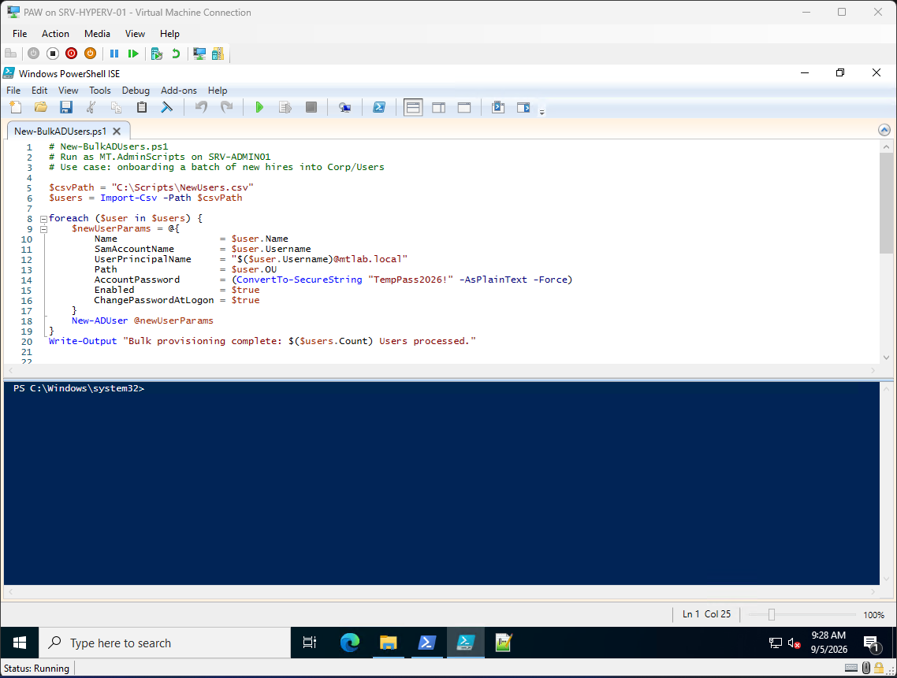
Script — ISE 🔍
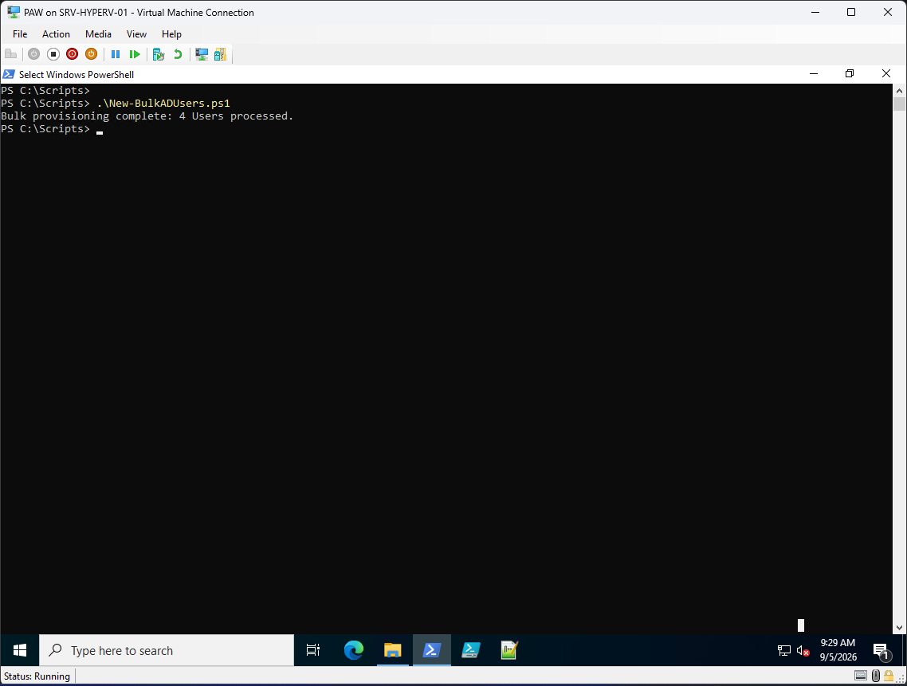
Script run 🔍
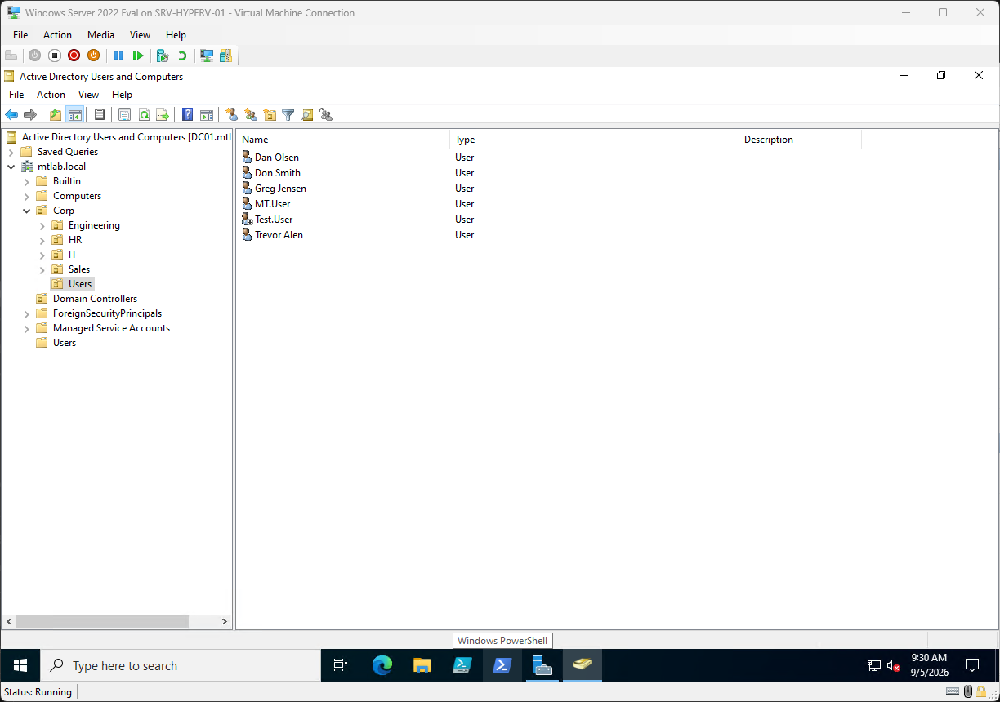
Result in AD Users & Computers 🔍
2
Password Reset
Resets a single AD user's password to a known temporary value and enforces a change at next logon, taking the target username as a parameter for quick help-desk-style use.
param(
[parameter(Mandatory=$true)][string]$Username
)
$newPass = ConvertTo-SecureString "Reset2026!" -AsPlainText -Force
Set-ADAccountPassword -Identity $Username -NewPassword $newPass -Reset
Set-ADUser -Identity $Username -ChangePasswordAtLogon $true
Write-Output "Password reset for $Username. Change-at-next-logon enforced."
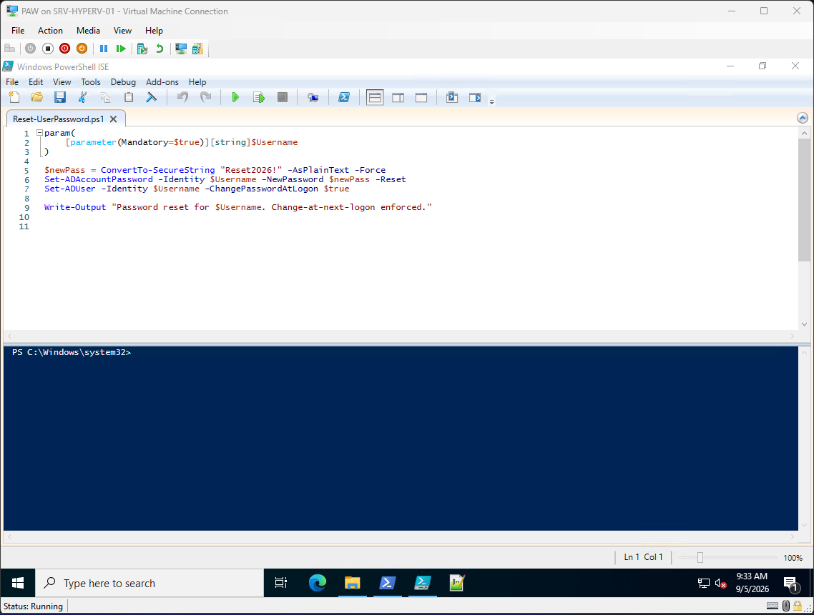
Script — ISE 🔍
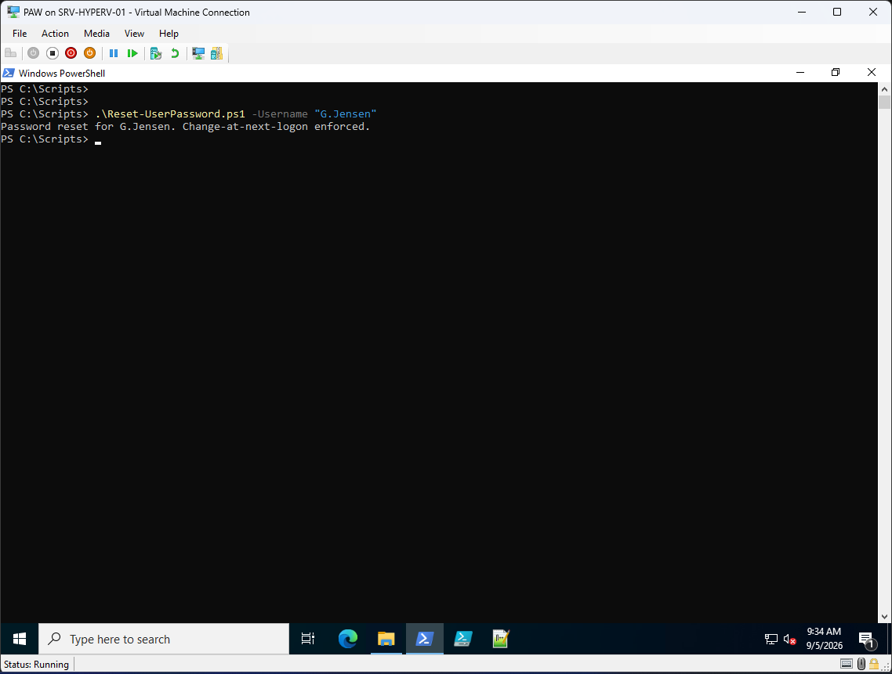
Script run 🔍
3
GPO Backup
Backs up every GPO in the domain into a timestamped folder and exports a manifest CSV mapping each policy's display name and GUID to its backup location, for easy restore reference.
$backupRoot = "C:\GPOBackups"
$timestamp = Get-Date -Format "yyyy-MM-dd_HHmm"
$backupFolder = Join-Path $backupRoot $timestamp
New-Item -ItemType Directory -Path $backupFolder -Force | Out-Null
Backup-GPO -All -Path $backupFolder | Select-Object DisplayName, Id, BackupDirectory |
Export-Csv -Path "$backupFolder\BackupManifest.csv" -NoTypeInformation
Write-Output "GPO backup completed: $backupFolder"
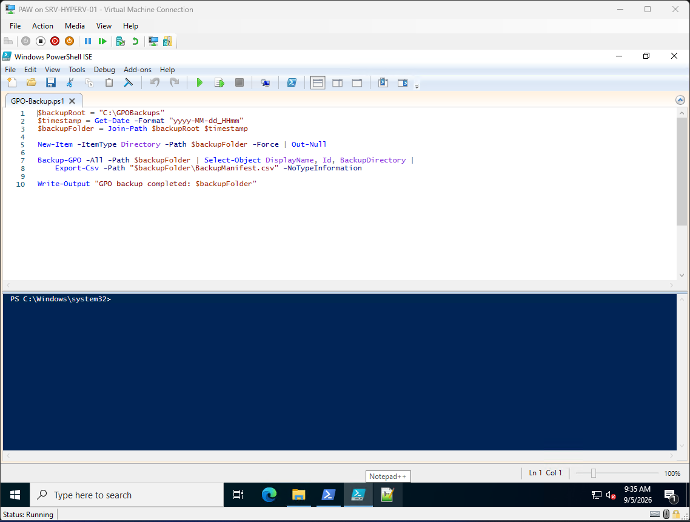
Script — ISE 🔍
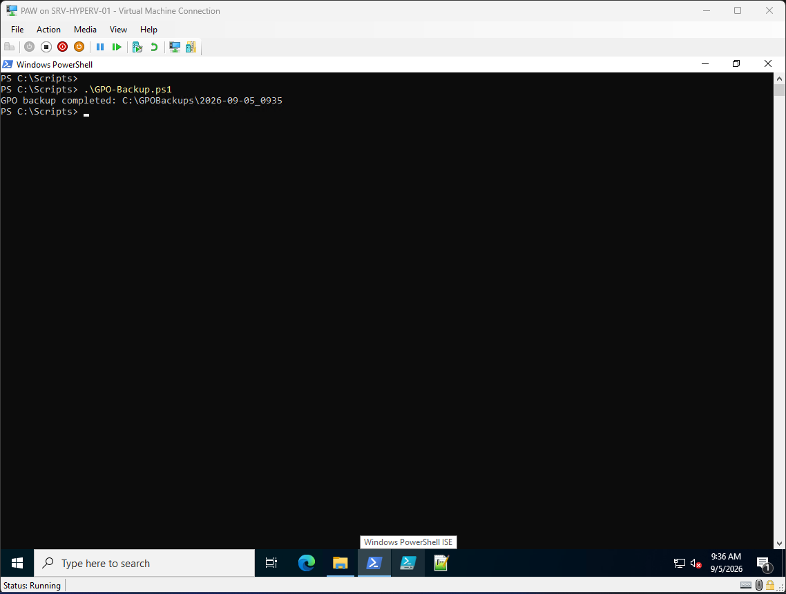
Script run 🔍
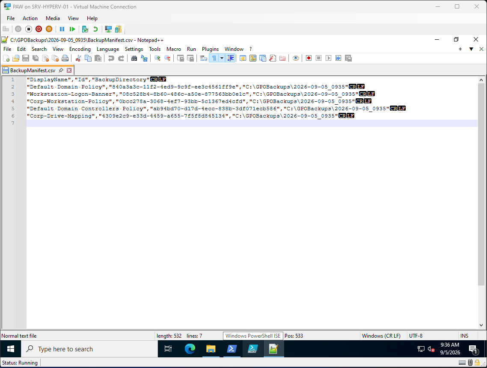
Backup manifest CSV 🔍
4
GPO Report
Generates an HTML settings report for every GPO in the domain, saving each one into a date-stamped folder with a sanitized filename based on the policy's display name.
$reportFolder = "C:\GPOReports\$(Get-Date -Format 'yyyy-MM-dd')"
New-Item -ItemType Directory -Path $reportFolder -Force | Out-Null
$allGPOs = Get-GPO -All
foreach ($gpo in $allGPOs) {
$reportPath = Join-Path $reportFolder "$($gpo.DisplayName -replace '[\\/:*?"<>|]','_').html"
Get-GPOReport -Guid $gpo.Id -ReportType Html -Path $reportPath
}
Write-Output "Generated $($allGPOs.Count) GPO reports in $reportFolder"
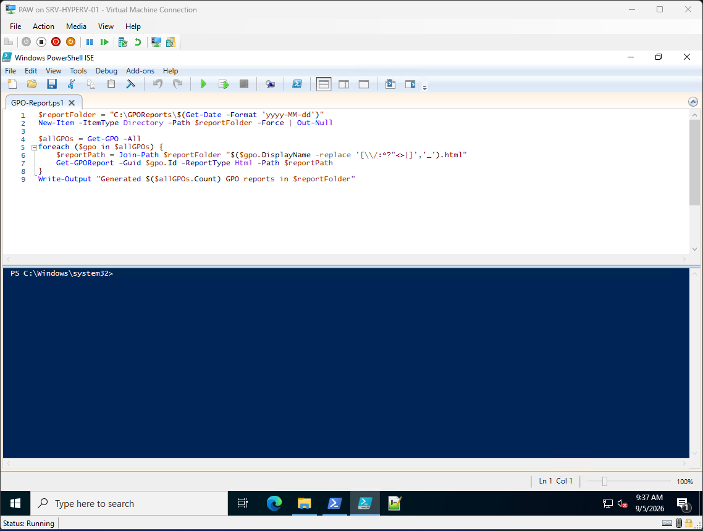
Script — ISE 🔍
Script run 🔍
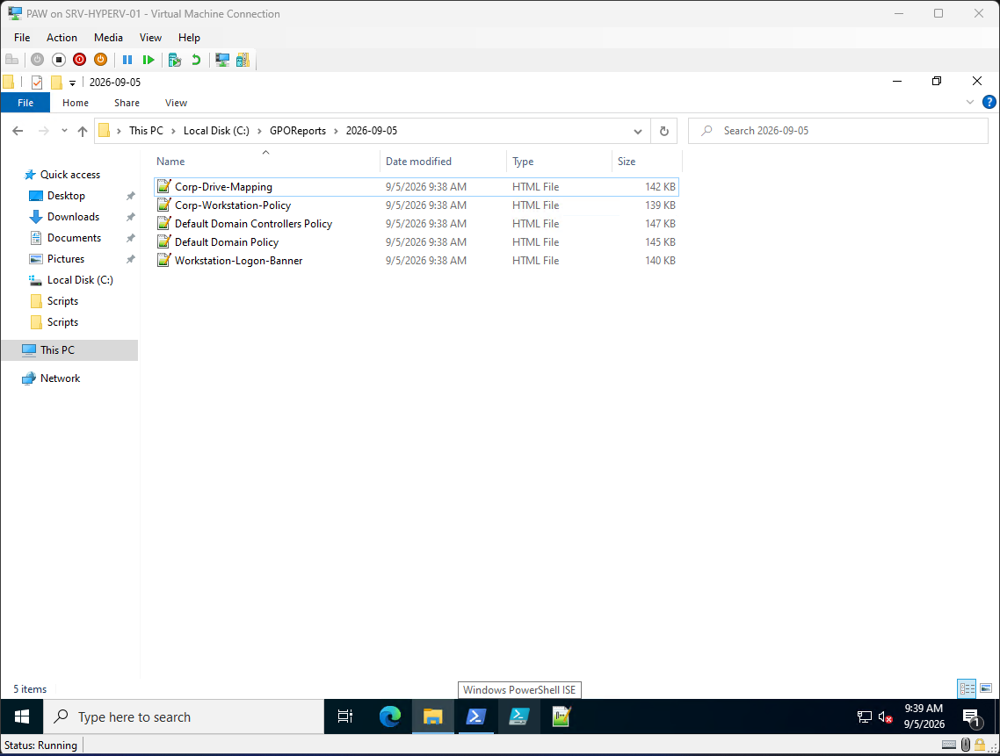
Generated reports 🔍
5
AD System Report
Pulls inactive user accounts, group membership counts, and disk space across key lab servers, then compiles all three into a single date-stamped HTML report for a quick environment snapshot.
$reportDate = Get-Date -Format "yyyy-MM-dd_HHmm"
$reportPath = "C:\Reports\AD-SystemReport_$reportDate.html"
$inactiveUsers = Search-ADAccount -AccountInactive -TimeSpan 30.00:00:00 -UsersOnly |
Select-Object Name, SamAccountName, LastLogonDate, Enabled
$groups = Get-ADGroup -Filter * | Select-Object -ExcludeProperty Name
$groupSummary = foreach ($group in $groups) {
$members = (Get-ADGroupMember -Identity $group -ErrorAction SilentlyContinue).Count
[PSCustomObject]@{ GroupName = $group; MemberCount = $members }
}
$targets = @("DC01", "SRV-ADMIN01")
$diskReport = foreach ($computer in $targets) {
Get-CimInstance -ComputerName $computer -ClassName Win32_LogicalDisk -Filter "DriveType=3" |
Select-Object @{N="Computer";E={$computer}}, DeviceID,
@{N="FreeGB";E={[math]::Round($_.FreeSpace/1GB,2)}},
@{N="SizeGB";E={[math]::Round($_.Size/1GB,2)}}
}
$html = @"
<html><head><title>AD & System Report - $reportDate</title></head><body>
<h2>Inactive User Accounts (30+ days)</h2>
$($inactiveUsers | ConvertTo-Html -Fragment)
<h2>Group Membership Summary</h2>
$($groupSummary | ConvertTo-Html -Fragment)
<h2>Disk Space</h2>
$($diskReport | ConvertTo-Html -Fragment)
</body></html>
"@
$html | Out-File -FilePath $reportPath -Encoding UTF8
Write-Output "Report generated: $reportPath"
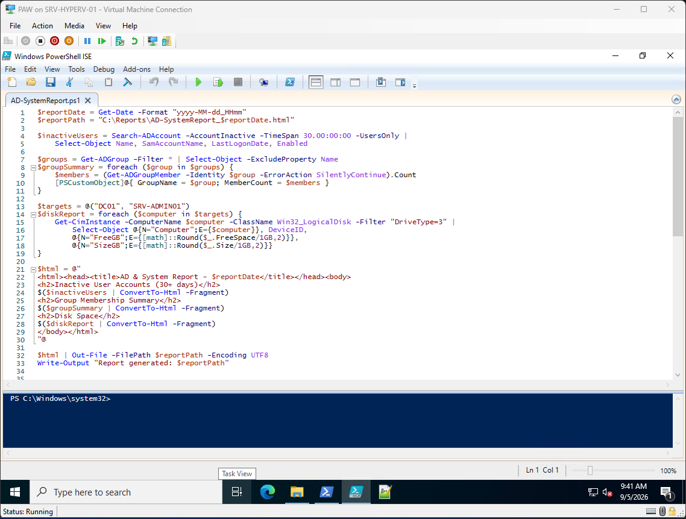
Script — ISE 🔍
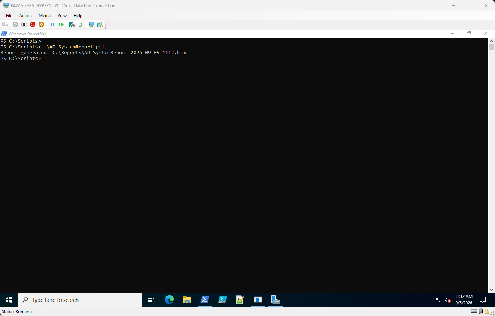
Script run 🔍
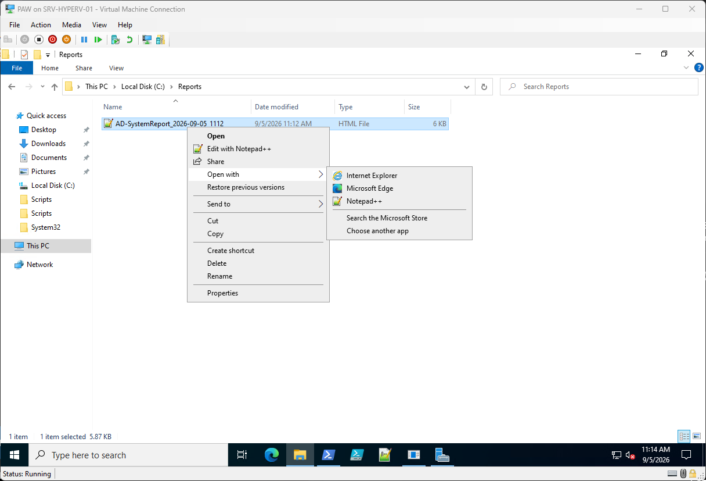
Opening the report 🔍
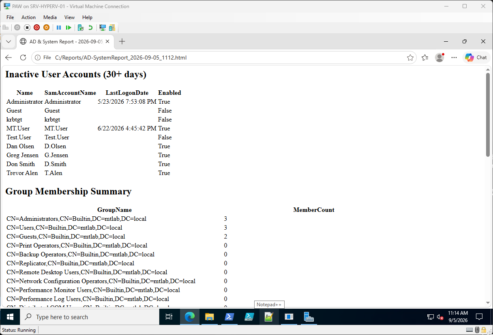
Rendered report 🔍
6
AD Daily Health Check
Pings a defined list of core lab hosts — the domain controller, admin server, client, NAS units, DNS Pi, and firewall — and appends an UP/DOWN status line for each to a daily log file.
$targets = @{
"DC01" = "192.168.20.10"
"SRV-ADMIN01" = "192.168.20.12"
"MTCLIENT1" = "192.168.50.20"
"Pi3-NAS" = "192.168.10.20"
"Pi5-DNS" = "192.168.10.5"
"FortiGate" = "192.168.100.1"
"TrueNAS" = "192.168.10.10"
}
$logPath = "C:\Scripts\Logs\Healthcheck_$(Get-Date -Format 'yyyy-MM-dd').log"
$timestamp = Get-Date -Format "yyyy-MM-dd HH:mm:ss"
foreach ($name in $targets.Keys) {
$ip = $targets[$name]
$result = Test-Connection -ComputerName $ip -Count 2 -Quiet
$status = if ($result) { "UP" } else { "DOWN" }
"$timestamp`t$name ($ip)`t$status" | Out-File -FilePath $logPath -Append
}
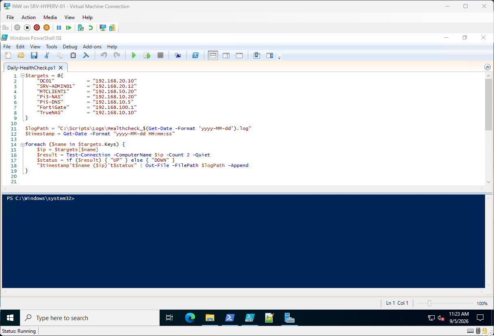
Script — ISE 🔍
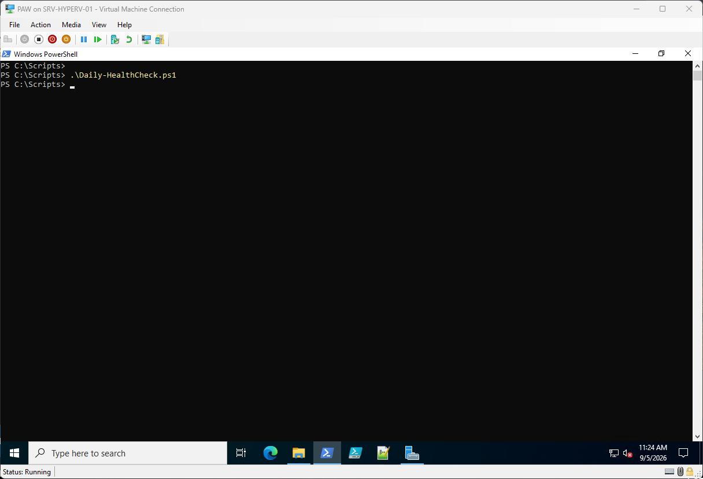
Script run 🔍
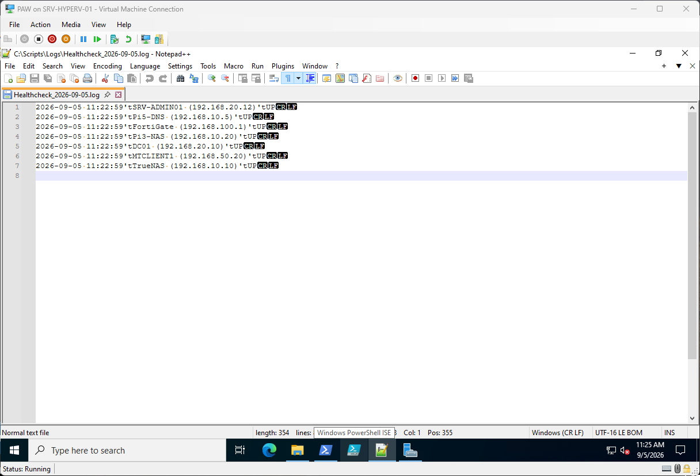
Health check log 🔍
7
Scheduled Task Automation
Registers the health check and GPO backup scripts as native Windows scheduled tasks — the health check daily and the GPO backup weekly — so both run unattended under a limited service account.
# Register the health check on a daily trigger
$action = New-ScheduledTaskAction -Execute "PowerShell.exe" -Argument "-NoProfile -ExecutionPolicy Bypass -File C:\Scripts\Daily-HealthCheck.ps1"
$trigger = New-ScheduledTaskTrigger -Daily -At 7pm
$healthTaskParams = @{
TaskName = "Daily Lab Health Check"
Action = $action
Trigger = $trigger
User = "LAB\MT.AdminScripts"
RunLevel = "Limited"
}
Register-ScheduledTask @healthTaskParams
# Register weekly GPO backup
$gpoAction = New-ScheduledTaskAction -Execute "PowerShell.exe" -Argument "-NoProfile -ExecutionPolicy Bypass -File C:\Scripts\GPO-Backup.ps1"
$gpoTrigger = New-ScheduledTaskTrigger -Weekly -DaysOfWeek Friday -At 7pm
$gpoTaskParams = @{
TaskName = "Weekly GPO Backup"
Action = $gpoAction
Trigger = $gpoTrigger
User = "LAB\MT.AdminScripts"
RunLevel = "Limited"
}
Register-ScheduledTask @gpoTaskParams
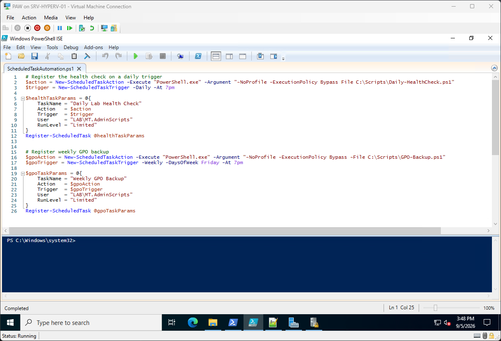
Script — ISE 🔍
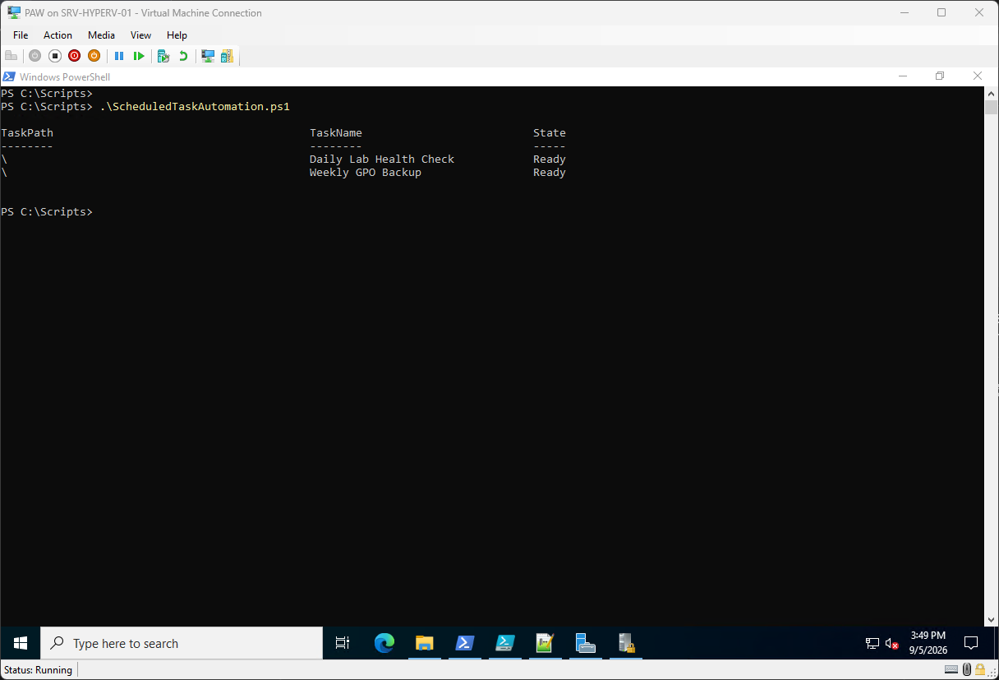
Registered tasks 🔍